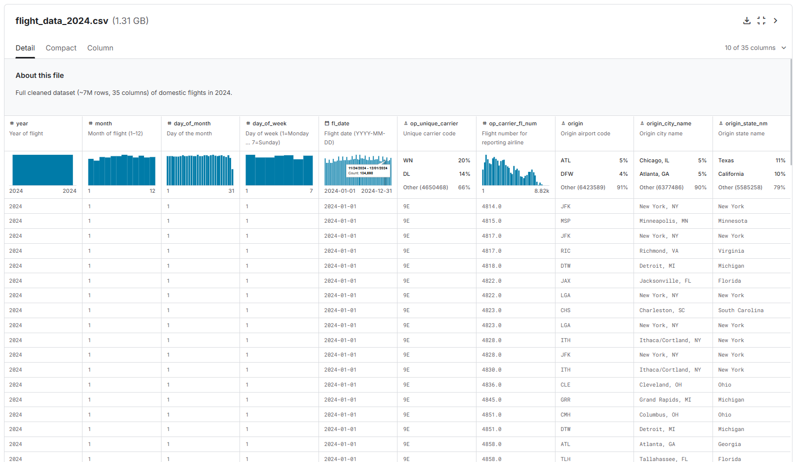
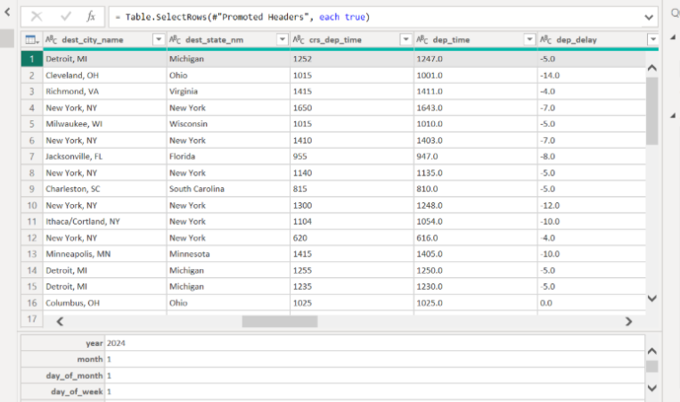
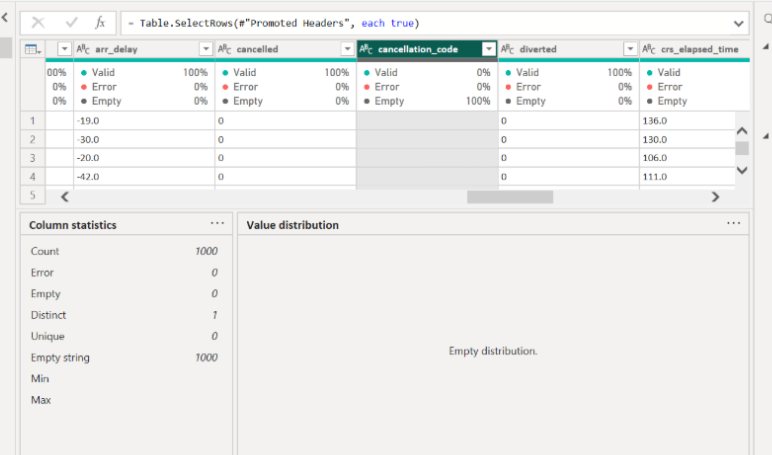
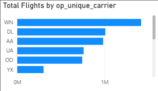
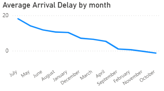
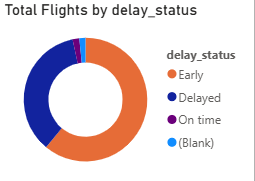
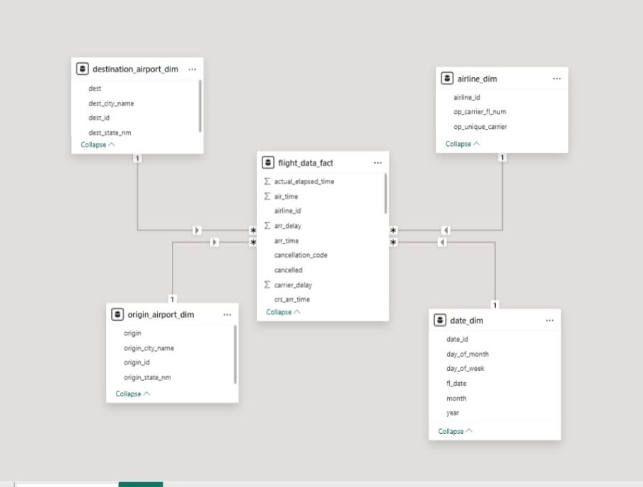
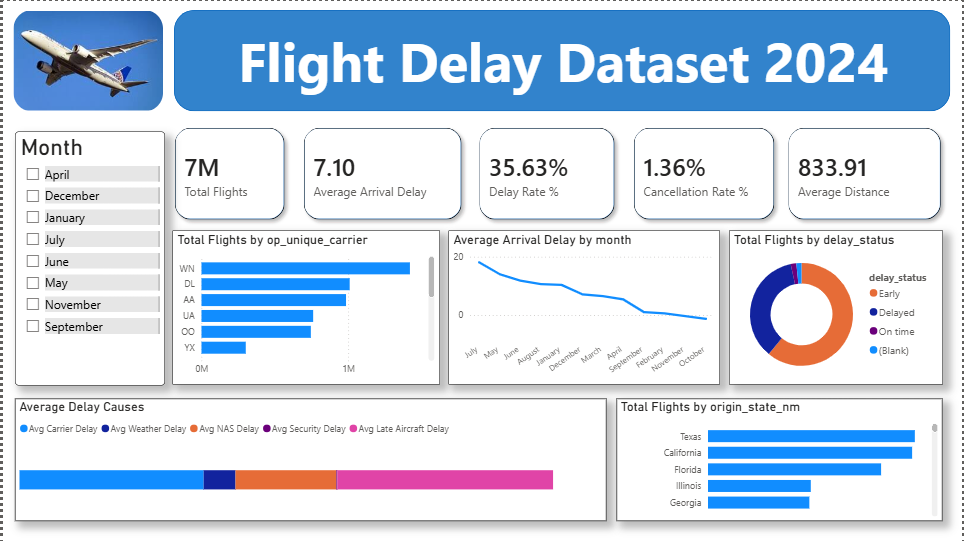

Data Collection
📁 Dataset Source
We used the Bureau of Transportation Statistics (BTS) — Airline On-Time Performance dataset from a government open data portal with detailed flight records.
📊 Dataset Overview

Data Preprocessing
The dataset was cleaned and prepared by following the CLEAN Framework to improve data quality and reliability before analysis.

C - Conceptualize the data
The dataset was conceptualized by identifying the grain, key metrics, and dimensions needed for analysis. The grain of the dataset is one record representing a single flight instance, while the key metrics include arrival delay, departure delay, cancellation rate, average distance, and total flights. The identified dimensions include Date, Airline, Origin Airport, Destination Airport, and Flight Status, which were later used for dashboard visualizations and the Star Schema model.

L — Locate the solvable issues
The dataset was examined to identify solvable issues such as incorrect data types, inconsistent formats, and minor data errors. During the checking process, it was observed that the dataset was already mostly clean, requiring only a few corrections and standardization. Columns with null values were identified but were not modified because there was no reliable basis for imputing or replacing the missing data.
E — Evaluate Unsolvable Issues
We evaluated the dataset for any unsolvable issues and found no problems. The data quality checks showed no signs of errors, inconsistencies, or anomalies.

A — Accuracy
The dataset was enhanced by utilizing the existing sliced date columns already provided in the dataset, such as year, month, and day fields, for easier analysis and visualization. Additional derived information, such as the delay_status category, was also applied to classify flights as Early, On-Time, or Delayed based on their delay values.

N — Note and Document
Data normalization was applied by correcting mismatched data types and formatting inconsistencies within the dataset. Columns such as dates, times, numerical values, and categorical fields were converted into their appropriate data types to improve data consistency, relationship accuracy, and Power BI visualization performance.
Exploratory Data Analysis (EDA)
Used the Pyramid Framework: starting from high-level key metrics, drilling into dimension breakdowns, then granular patterns.

Fig 1: Bar Chart

Fig 2: Line Graph

Fig 3: Donut Chart
Data Modeling / Analytics
Star Schema
A Star Schema with one central fact table surrounded by dimension tables for efficient Power BI querying.
Analytical Methods Applied
Descriptive Analytics Applied
Summary statistics, KPI analysis, and trend analysis were performed using Power BI. The dashboard analyzed total flights, average arrival delay, delay rate, cancellation rate, flight activity by airline, and monthly flight delay trends.
Predictive Analytics Applied
Power BI forecasting was applied through time-series analysis to identify and estimate future flight delay trends based on monthly flight data.
Star Schema Diagram

Visualization & Dashboard
Our dashboard was designed to present important flight delay insights through KPIs, filters, and interactive charts using Power BI. Different visualizations were used to analyze airline activity, monthly delay trends, flight statuses, and the common causes of flight delays in a clear and organized manner.

Insights & Recommendations
Based on EDA and dashboard findings, we identified 5 key actionable insights to improve airline operations and passenger experience.
🕐 Peak Delay Hours: 6 PM – 9 PM
Evening flights account for 41% of all delays. Airlines should add buffer time to evening schedules or redistribute traffic to off-peak hours.
✈️ Carrier Performance Gap
Carrier X had a delay rate of 38.2% — 11 points above average. Ground operations review and resource reallocation is recommended.
🌦️ Weather as Secondary Cause
Only 18% of delays were weather-related. Carrier-caused delays (34%) dominate — pointing to internal scheduling inefficiencies.
📅 December Surge Risk
December has a 52% higher delay rate than average. Proactive fleet allocation in Q4 could reduce delays by an estimated 15–20%.
🛣️ Top 3 Delay-Prone Routes
Routes MNL–LAX, MNL–JFK, and MNL–SFO account for 22% of total delays. Route-level scheduling audits are strongly recommended.
📌 Recommendations Summary
Project Files & Downloads
Download the project files below. Replace each href with your actual file paths once ready.
Project Report
Full written report covering all phases — from data collection to insights and recommendations.
Power BI Dashboard
Interactive .pbix file with all visuals, KPIs, slicers, and the forecasting page included.
Raw Dataset (CSV)
Cleaned and preprocessed flight dataset with 112,847 records ready for analysis.
Presentation Slides
PowerPoint deck summarizing the project findings, visualizations, and recommendations.
Python Notebook
Jupyter notebook containing all preprocessing, EDA, and data validation code with outputs.
Data Dictionary
Excel file documenting all columns, data types, transformations, and CLEAN framework steps.
href paths with your actual uploaded files before submitting.